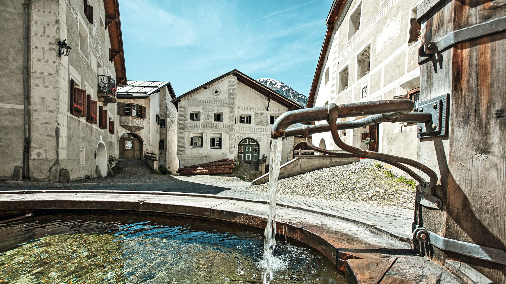

브레갈리아(Bregaglia)의 카스타세냐(Castasegna) 마을은 이탈리아 국경 지대에 있다.
훼손되지 않은 자연 풍경 한복판, 계곡 거의 바닥 면에 있는데, 마이라(Maira) 강 조금 위쪽에 있다.
마을은 계곡 양쪽으로 펼쳐진 단밤 숲에 둘러싸여 있다.
카스타세냐 마을은 해발고도 686m에 자리해 있는데, 마을 중심부는 놀랄 만큼 도시적이다. 키아벤나(Chiavenna) 마을 같은 이탈리아 중심지에 근접한 거리와 중요한 통상로에 자리한 위치는 일찍이 이 마을에 부를 가져다주었다. 중심가는 단촐한 가옥과 화려한 건물로 즐비한데, 그중에는 빌라
가르발드(Villa Garbald)가 있다. 국제적으로 명성 높은 건축가 고트프리드 셈퍼(Gottfried Semper)가 디자인한 알프스 남부 유일한 건물이다. 이 중심가 너머의 분위기는 시골스럽고, 자그마하며, 더 소박한 가옥들이 많다.
유럽 최대의 단밤 숲 중 하나가 카스타세냐 위로 펼쳐져 있다. 단밤 나무 사
이, 마을 중심가 바로 위에 밤을 건조하는 작은 오두막들이 있는데, “카신스(Cascines)”라 불린다. 이들은 이정표가 설치된 트레일 상에 모여 있다. 초창기에 단밤을 건조하기 위해 사용되었던 곳으로, 지금도 여전히 구경할 수 있다. 단밤에 관해 배워보고 싶다면, 단밤 자연 트레일(sweet chestnut n
ature trail)을 따라가 보아도 좋다.
마을 중심부 위, 그윽한 단밤 숲 한가운데에도 거주지가 있는데, 이 지역 발전소 근로자들을 위해 1950년대에 건축가 브루노 자코메띠(Bruno Giacometti)가 지은 것이다.